3作品目「AlongCollision」
内容:おはじきミニゲーム
制作時期:3年次4月 ~ 6月
制作人数:5人
役割:プロジェクトリーダー、ディレクター、PM
担当箇所:ディレクション、工数管理、チュートリアル、エフェクト、BGM・SE
自分がゲームデザインで大事だと思っている、
明確に気持ちいい瞬間とユーザーの頭を常にバグやめんどくささ等の
ネガティブな方向ではなく、ワクワクなどポジティブな方向に働かせる、
という2つの事をおはじきゲームを通して実装することに拘りました。
動物にぶつかった後の反動でまた別の動物にぶつかる、
連鎖してぶつかった瞬間を一番気持ちいい瞬間にするために、効果音・エフェクトの
調整はもちろん、ヒットストップ、ぶつかった際の反射角度補正など
気持ちいい瞬間をつくるために多くの工数を割いて実装してもらいました。
また、ゲームプレイの進度に応じたユーザーの思考を考え、
不快要素を消し、ステージの始まりからクリアまで簡単な時間を減らし
難しい時間を多めにすることで、ユーザーを忙しくさせ
多くの時間頭が暇にならないようにしました。
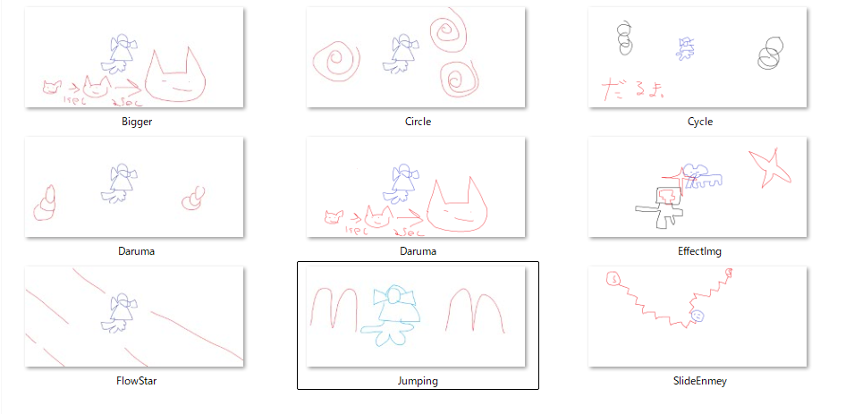
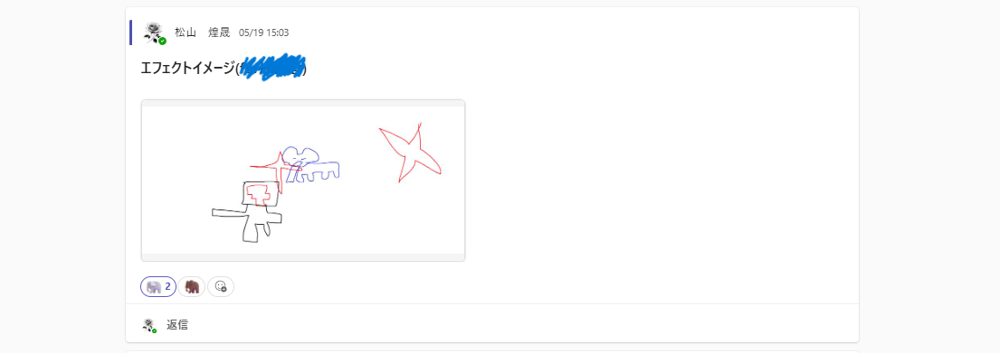
おはじきというコアコンセプトがあり、プレイヤーがぶつかった時の
反動による連鎖反応を一番気持ちいい瞬間だと想定して制作していく中で、
反射距離が短いと連鎖しなくて薄味なゲームになる、
反射距離が長いと動物から離れてしまって、近づくために移動するプレイが
多くなってめんどくさくなる。この矛盾を解消するための、
反射方向による距離変動や反射に関する数値調整は、制作中常に向き合ってきました。
他にも自分のビジョンをチームメイトに伝える時は
イラストを使ったりゲームの例を出したり工夫をしていました。
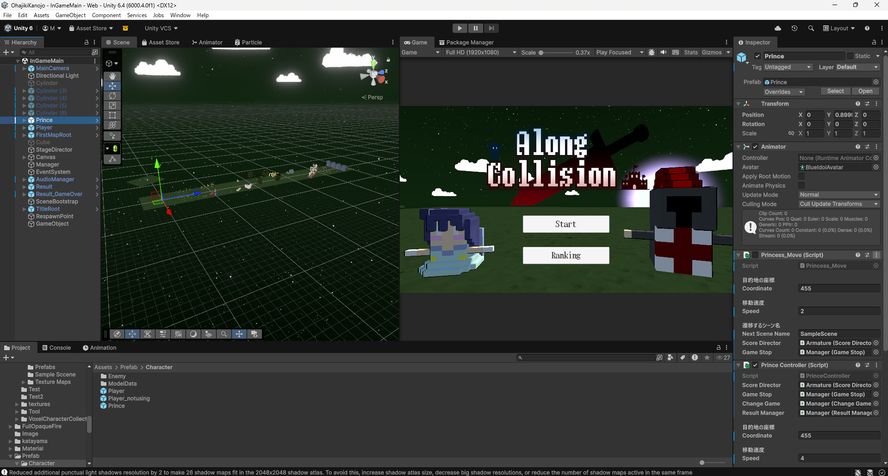
工数が2カ月で授業のコマ数も多くなかったので、仕様書や企画書を
あまり作らず口頭で実装内容を伝える形で制作していたのですが、
明確な資料がないので「ここだけは譲れない」というポイントでメンバーと
話し合う際、頭にあったゲームデザインを否定されて、こういう構想があったと
言い返しても、その場の感性で言っていると思われてしまい、
話し合いが感性と感性の平行線になってスムーズに決まらなかったので、
プランナーなどの方たちが作ってくれる仕様書などの資料の
大事さを、骨身に痛いほど染みて理解することができました。
またディレクターとして、音楽やマップのデザインをどうしたら
ゲームのおもしろさに繋がるのかを考えることができたり
「メンバーにこう動いてほしい」というディレクターの視点を学生の内に
経験できたこともとてもありがたかったです。
メンバーの工数管理がうまくいかず、開発後期のバグ修正などに時間を取られて
考えていた100%のゲームを実装できなかったことはもの凄く悔しかったです。
開発期間が終わる際にPMの経験がある先生に当時どうしていたかを聞いて
色々教えていただいたので、次工数を管理する機会があれば見事な工数管理をしたいです。
仕様書の重要性やゲームデザインの勉強、工数管理など、力不足で
リーダーとして上手く動けなかったのはとても悔しかったです。
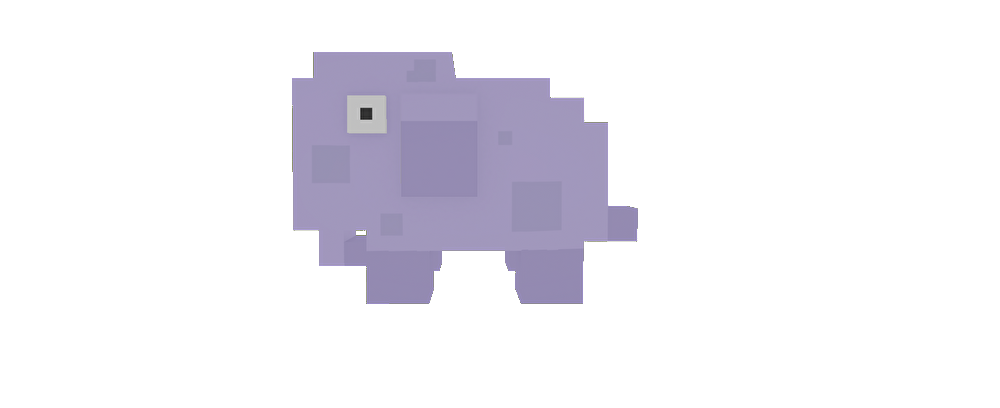
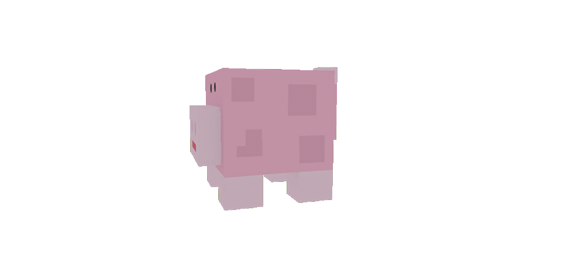
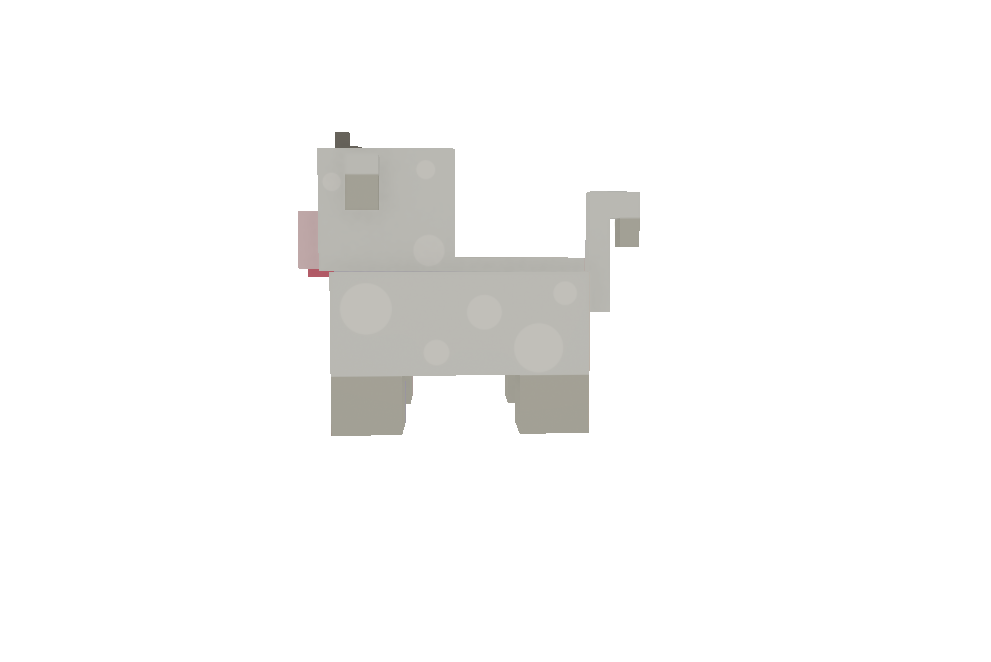
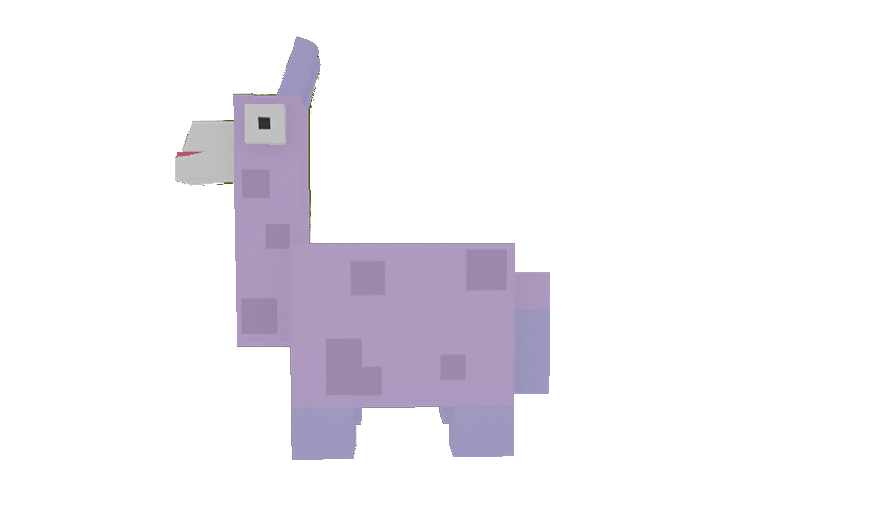
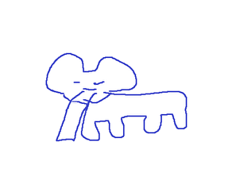
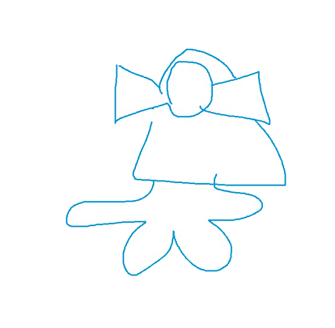
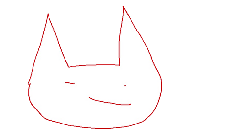
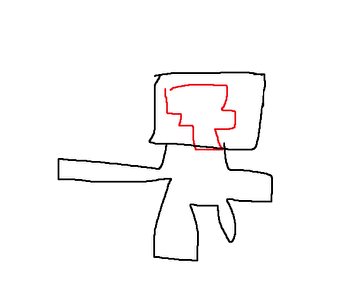